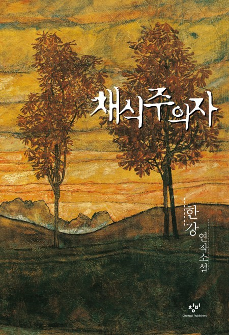

library
Search books...
Book of the day
The sense of an Ending
Julian Barnes
Journey
Biography
Book Now
Top Adventures

Popular authors
무라카미 하루키
소설 《바람의 노래를 들어라》로 1979년 군조 신인 문학상을 받으면서 데뷔하였다. 1987년 발간된 《노르웨이의 숲》이 430만 부 이상 팔린 베스트셀러가 되면서 국내외적으로 무라카미 하루키 붐이 일어나게 되었다. 단편 소설, 장편 소설을 포함하여 에세이, 논픽션, 기행집 집필 활동도 활발하고 영미 문학 일역가로서도 활동한다.